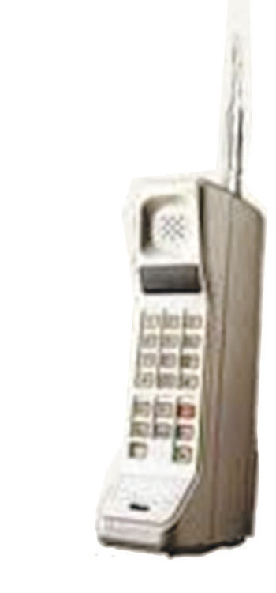
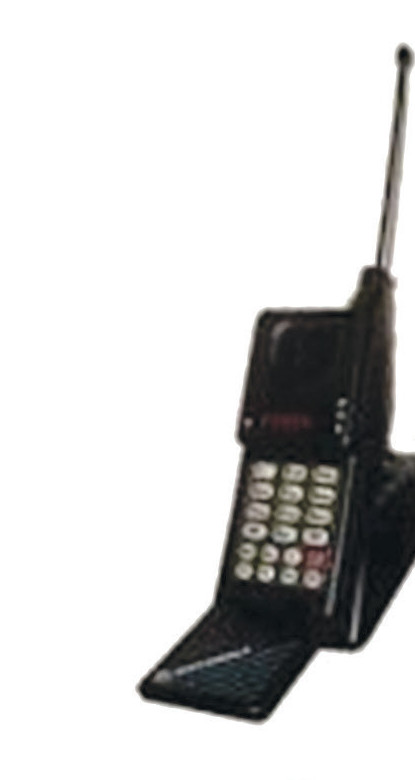
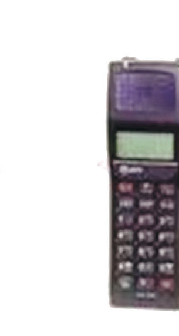
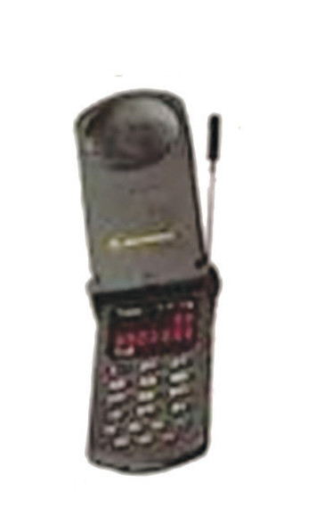
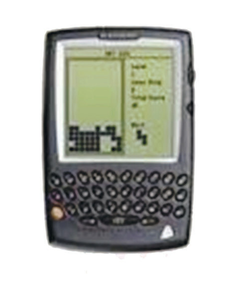
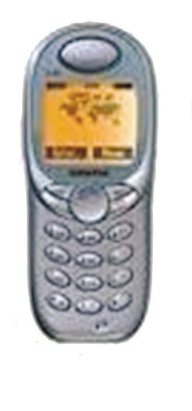
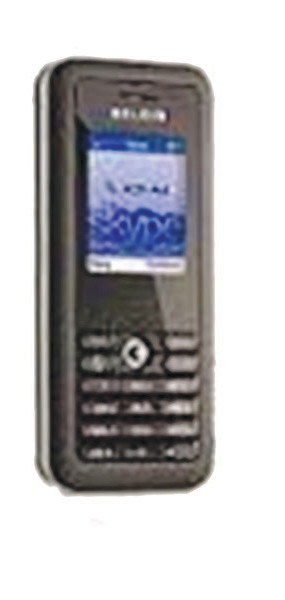
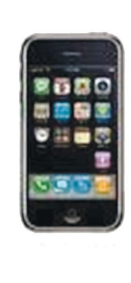
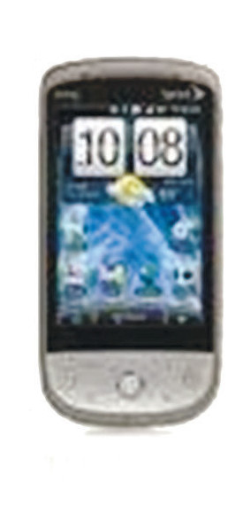
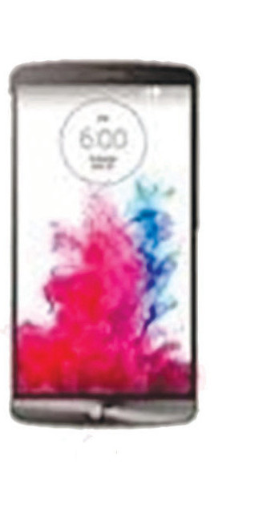

The relationship between invention, innovation and creativity
Entrepreneurs are believed to have creative minds which enable them to look for new and creative ways to do things that make a difference in the world. It is very important to understand the relationship between creativity, innovation, and invention. Creativity builds up innovative and inventive ideas. Innovation is a bridge that connects creativity and practical applications. Figure 2.3 shows various innovations the mobile phone devices have undergone since 1982. Invention, on the other hand, is the outcome of the creation of a new idea that has never existed before. For example, the development of the first mobile phone in 1982 as shown in Figure 2.3.










Figure 2.3: The evolution of mobile phones
Source: https://i.pinimg.com/originals/2c/54/c9/2c54c99fe5968fb228fe359dd7f850f3.jpg